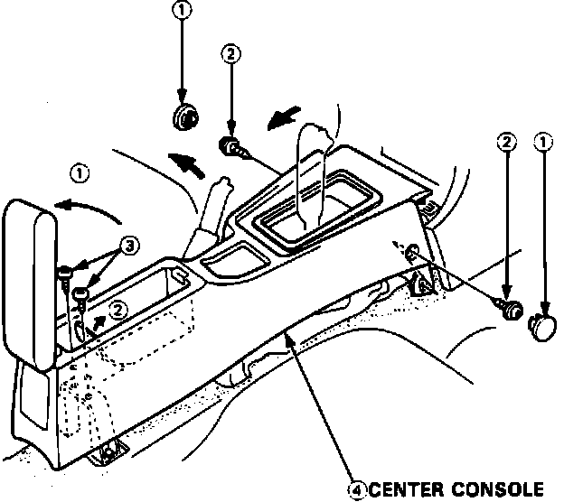

Radio/Stereo: Service and Repair
Fig. 9 Center Console Removal:

1. Disable coded theft protection system as described under Accessories and Optional Equipment / Antitheft and Alarm Systems / Service and Repair.
2. Disarm airbag system as described under Air Bags and Seat Belts / Air Bags (Supplemental Restraint Systems) / Airbag System Disarming.
3. Remove center console as shown in Fig. 9.
4. Remove heater control assembly, then ashtray.
5. Remove radio assembly four attaching screws, then pull rearward.
6. Disconnect radio electrical connectors and antenna, then remove radio.
7. On LS models, remove audio power amplifier attaching screws, disconnect, then remove.
8. On all models, reverse procedure to install.
9. Restore coded theft protection system and rearm airbag.